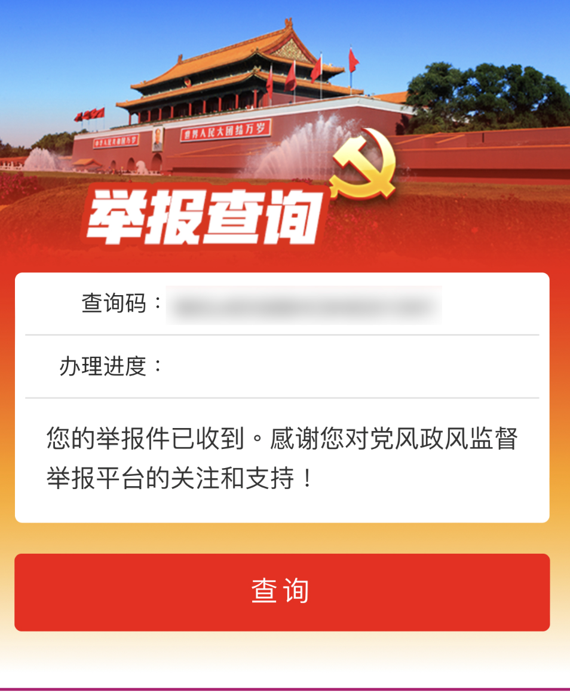
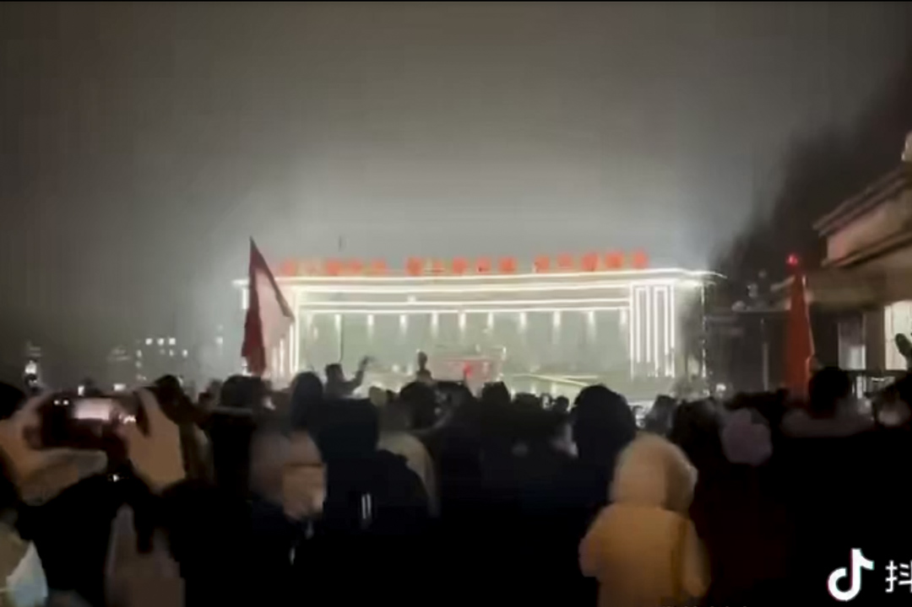
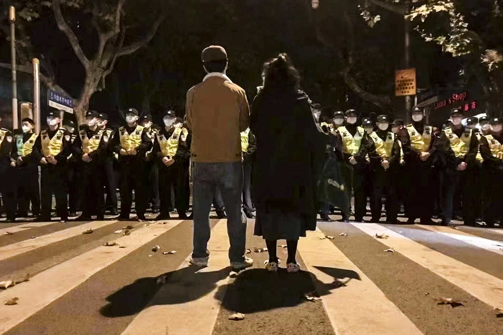
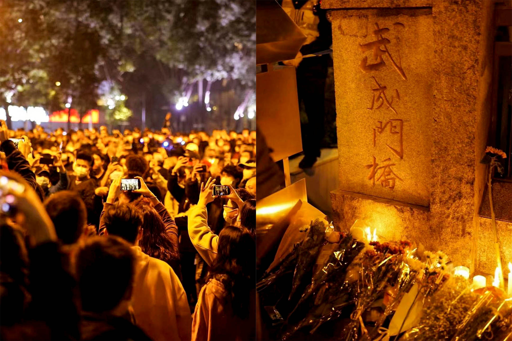
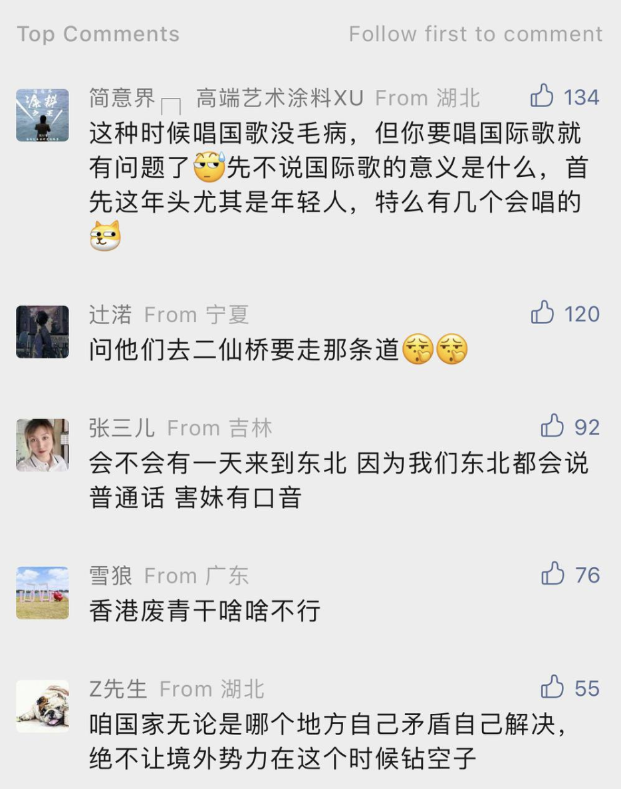
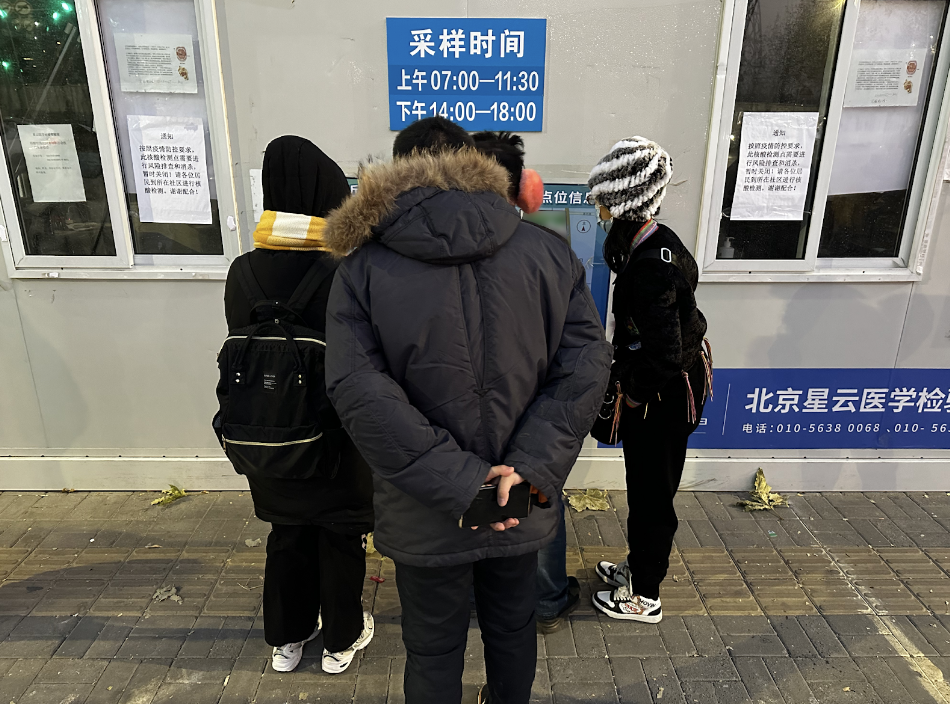

弱者的反抗：北京南郊青年的地下一週
Table of Contents
風起雲涌的一週裏，有的人仍被封在小區內，這是他們記錄下的那些瑣碎但並非沒有意義的瞬間。
特約撰稿人 張密雲，吳懷柔；編輯 楊雄安
刊登於 2022-12-04
「不重磅記者自留地」是端傳媒新開設的專欄，由來自不同地區的記者輪值書寫。這些故事也許並不重磅、也非必要，卻是記者生涯中，讓我們心癢難耐、不吐不快的片刻。
過去的一週，我們或在現場、或在屏幕看到一場迅速、激烈、中心化的運動。很多人的參與其實是在網絡完成的，人們看新聞、發社交媒體、 在聊天群裏守望相助。其中不少人的肉身其實還在被封的小區之內，他們懷着內疚在地下空間進行弱者的反抗，不能去現場示威，就在網絡支持。他們的參與也總是 被原子化的處境影響，有責任感，也有情緒，有正面對峙，也有行為藝術般的地下不合作。此次來自留地作客的是兩位困在北京南郊居民小區的媒體人，本文由兩位 合寫而成，記錄了過去一週那些瑣碎但並非沒有意義的瞬間。
11月24日 一個人的發瘋
我是突然得知小區被封的。
在此之前，我幾乎從未關注過北京的疫情動態。我住在北京南郊，這裏人口稀疏，沒什麼商場和寫字樓。即便有疫情也零零星星，不像朝陽、海淀等人口密集區那樣遍地開花。當我的朝陽同事討論囤菜的時候，我只是淡然一笑，表示南郊人根本無需操心吃飯問題，現在就去街對面吃麥當勞。
到小區門口，兩個保安擋住去路。從他們口中我才得知：本小區雖無陽性病例，但已經被諸多高風險小區包圍，為保證居民安全，小區實行出入證制度，只有 「參與疫情防控工作的醫務工作者、保供人員、社區工作人員、志願者、機關企事業單位幹部職工」能夠用「單位證明」來申請出入證，從而進出小區。
這段日子居家辦公，我每天靠外賣和料理包生活，足不出戶。要不是突然想吃麥當勞，怕是直到明年都不知道小區經歷了一次封控。保安大爺稱：封控已有兩三天，群裏也通知過。我聽完更加生氣，在這小區住了一年多，居委會都沒把我拉到群裏。
在我要求下，居委會工作人員把我拉到了小區微信群裏。回家剛進群就看到名為《致居民的一封信》的文件，其中寫道：「為有效控制外來疫情傳播，請廣大居民理解支持，配合做好防疫工作，不走親訪友，不全家聚集，平安居家一週，換來本小區的後續安全。」
這張落款為xxxx居委會的無蓋章文件讓我想起最近的一些小道消息：北京有些小區已經通過抗議的手段完成了解封。於是我在群裏回了一句：「還要居家 一週？」不滿的居民不止我，有人抱怨因小區封控無法上班，有人要求居委會提供上級部門文件，有人直接表明「平安居家一週」沒有任何法律依據，「這符合二十 條嗎？我們的自由權被嚴重侵犯了。」
不過，南郊小區中老年人居多，許多居民本就沒有出行需求，要麼覺得多一事不如少一事，在群裏沉默不語。400多人的微信群，翻來覆去就七八個人在抗 議，居委會工作人員看我們不成氣候，也沒有回覆的意思。慢慢地，另外幾位抗議者疲倦了，只剩下我一個人在群裏「發瘋」。我批量轉發朝陽區衆小區解封的視 頻，複製粘貼論述低風險小區封控不合理的文案，聲稱居委會讓我們居家的行為是違法的，建議大家效仿朝陽群衆，到小區門口聚集抗議。
但理我的人不多，居民們關心的問題是：
今天下午的核酸在哪裏做？
小區裏賣的白菜多少錢一斤？
世界盃開始了，體育彩票在哪裏買，該押哪個隊贏？

我轉而尋求「青天大老爺」的幫助。我給12345（北京市市民服務中心）、12320（北京衛健委）、12388（中央紀委）等部門打了49個電 話，還在國務院客戶端小程序和中央紀委國家監委舉報網站上留言，控訴我們區黨委書記置「二十條」、「九不準」於不顧，公然與中央政府對抗。
他們都說已經轉達有關部門，讓我「等回電」。
11月25日 上等人也轉發了
沒有迴音。
這兩天倒是養成新習慣，看「末日求生」類網文-–—城市突然被瘟疫席捲，周圍人變成喪屍，主角也不能倖免於難。但主角總會重生歸來，憑藉這兩年對抗新冠疫情的經驗，囤夠糧食，苟活到末日結束。
其實早在今年5月，北京就已封控了一個月-–—當然我們的社區書記說那是靜默管理，一遍遍強調從未封城。我們「只不過是天天做核酸，不能出小區，搶菜 全靠手速，外賣快遞全停」。自此其實我也有囤糧的習慣。現在我租的屋子裏，5升一桶的飲用水有20瓶，大米、面粉以及水果、肉食罐頭足夠吃半年。
但網文裏封鎖是暫時的，未來還有希望。現實並非如此。
因為畢業於外語院校畢業，我微信裏一千多位好友中，有大半在國外學習工作。國內信息封鎖，我卻近水樓台了解到國外的情況。相比之下一開始我不理解， 在中國，一場小感冒為何能讓三千多萬人的城市說封就封；一年下來，再無知也懂了：這場馴化還沒成功、具有「黨性」的疫情怎麼能說停就停？
現實已經足夠苦悶，不看點爽文還怎麼活。但網文沒有新的連載，我打開朋友圈又回到現實。但這次是當頭一棒。朋友圈被烏魯木齊火災案刷屏，又一場人禍 來了，身處新疆或者在媒體工作的好友一遍遍更新着最新細節：小區外有門禁，消防車進不來；樓門有遮擋，人出不去。我義憤填膺，轉發他們發布的信息，很快， 其他好友也把信息和憤怒接力傳遞下去。

Figure 1: 2022年11月25日晚上，微信、抖音等多個短視頻平台流傳出烏魯木齊市民集體走上街頭要求「解封」的視頻。
可馬上出現的官方通報中，一切又「反轉」了：小區沒有門禁、樓門沒有封堵，消防車可以在小區內暢行。而之前大家發的內容已經看不到了，視頻是「違規」的、照片都是「捏造」的。奪走至少10條人命、本可以制止的火災，在官方話語裏，成了活該。
我失眠了，從凌晨掙扎到上午十點。憤怒、悲傷與焦慮輪流拎着我的精神，讓它被迫保持清醒。癱在沙發上，手指機械地刷着屏幕，眼神卻無法聚焦。眼前無 章法閃過的，是從今年4月上海封城，一樁樁一件件防疫導致的「人災」。烏魯木齊火災，地理位置和我隔得很遠，但從內在運轉的邏輯來看，它們離我越來越近。
我住的小區人口稠密，停車場位置不足，門口的車輛把小區通往外界的兩條幹道層層圍住；一棟樓每層三部電梯，兩個樓梯，卻密集擠着幾十家住戶。一旦真 有火情，誰能逃得出來？在北京，這樣為「青年打工族」而打造的「青年公寓」附滿了每個小區。只要攤上就逃不過。愛咋咋地吧。我睡着了。
晚上七點醒來，打開手機，連着滑動幾屏都是一篇名為《路是通的，他們不跑》的推文-–—諷刺烏魯木齊的官方通報。我感到意外的是，參與刷屏的人中，有些竟然是母校中東語言學院的學生和老師。
這個學院的威名，我早有耳聞。今年，伊朗女性發起摘掉頭巾運動，為此付出生命代價，該院師生點評：「這是美國挑起的內亂，人們被利用了，要尊重國家信仰」。再早些時候，俄烏打仗，他們發言：「這是美國挑起的戰爭，烏克蘭被利用了，俄羅斯是受害者。」
該院學生與我閒聊時吐槽，學院書記的戰狼風格才是一頂一，時不時在朋友圈裏把柴靜等記者拉出來罵，任何指出種花家（內地社交平台對中國的美譽，中華 家的諧音）半點不好的都是美國的反動勢力。總之，凡事必發言，發言必納粹。該院朋友和我解釋，這個學院的教育就是如此。上文化課，三句不離美國，提到那張 著名的難民兒童在海邊遇難的照片，也總說是美國導致的結果。學生天然對難民兒童有的同情與憐憫，轉而變成了對美國的敵視。老師們絲毫不提聯合國決定支援敘 利亞平定戰火時，中國都投的是反對票。
對這個學院，我敬而遠之，這一年來拉黑不少人。還有一些沒刪掉的，是半年不發朋友圈的學生以及動不動就歲月靜好的老師。可這次，她們也加入刷屏浪 潮。其中有個教授，此前在朋友圈反諷柴靜紀錄片《穹頂之下》，剛剛卻轉發了一篇標題很有力量的推文：《當前，我們迫切需要重建社會秩序》。那篇文章的作者 指出，疫情下權力的擴張已經到了無邊界的程度。
放在一年前，這文章是教授自己都要罵的。
還有位老師，上課時衣服從不重樣，昂貴面料讓人猜不出價格。許多女學生崇拜她。小道消息說她家境優越，在國外留學十年，老公是國內某個學科的扛鼎人 物-–—這些條件，足夠讓她不食人間煙火了。她的朋友圈每天分享的無外乎是幸福生活，有些飲食材料，我看了半天認不出。可今天，她也連着轉了數篇關於「北京 小區封控」和「新疆火災」的推文。
連她們都在動搖。之前貴州大巴車上那27條人命都沒喚起她們的「良知」，難道量變終於促成了質變？我思考了一陣，茅塞頓開：她們住在北京，同樣面對着突如其來的封控。是鐵拳打到了自己，才終於醒悟了一些。
但這還是好過還在裝聾的人。我點開其他幾個男教師的朋友圈，有的顯示半年可見，有的這幾天還在歲月靜好，感恩戴德。
11月26日 被統治的藝術
終於接到一通電話，可惜，打電話來的是我們街道的警察。
警察同志直呼我的大名，對我進行「法宣」，要求我以後不要在群裏發布「不正能量的」、「沒有用的」東西。我權衡一下，被封在小區還是比被關進監獄強，便服從指揮，在小區群裏徹底閉嘴。
既然小區解封無望，我只能想辦法搞到出入證了。但名單上的「參與疫情防控工作的醫務工作者、保供人員、社區工作人員、志願者、機關企事業單位幹部職工」這些要求，我一個都不符合。偶然打開申請出入證的小程序一看，發現如果需要「外出就醫、取藥」，也可以破格申請出入證。
衆生皆有病，誰能說我是健全人？我搜到離家最近的醫院，花60塊錢在網上掛了精神科專家號，聲稱自己最近精神狀態不穩定，疑似雙相障礙，需要去進行檢查，否則有自殘自殺的風險。上傳預約掛號的截圖沒多久，我就獲得了出入證。
剎那間，我開始懷疑之前抗爭的意義：明明只要謊稱有精神病就能獲得自由，何必像個正常人一樣爭取權利呢？不得不說，這種解決方案和思考模式蘊含着一 種「老中智慧」：煽動抗議推翻制度，沒人支持你；舉報投訴踐行制度，沒人回應你；但你可以選擇找到制度利益的漏洞，然後在不完善的制度下生活-–—或許這就 是所謂的「被統治的藝術」。
拿着精神病患者的出入證，大步昂首走出小區大門之後，我卻沒能感受到久違的自由：全區暫停堂食，有的店直接「躺平」，關門大吉，沒有一家店是我能進去的。我只能繞着小區走來走去，活像一個巡查封控狀態的領導。
最終，我決定買杯咖啡喝，結果被告知就算是外帶，也需要出示核酸檢測證明。問題來了，我們小區附近的常態化核酸檢測亭都已經被撤銷，小區裏又只在早 7點到早10點提供核酸檢測服務，那是一個我還沒醒的時間。我只能搜索下載了一個「北京健康寶模擬版」的地下軟件，輸入我的姓名，上傳我的照片，核酸陰性 一天的綠碼就此生成，甚至還有配套的「綠碼，核酸一天」的音效。我戰戰兢兢地出示虛假的綠碼，提着焦糖瑪奇朵回了家。
進屋打開手機，朋友圈又變了。
上海的年輕人走到烏魯木齊中路，舉起白紙。白紙的創意，源自於《路是通的，他們不跑》這篇推送的接力。這篇推送被官方刪除後，其他公衆號陸續轉發。 原文是簡體中文，被屏蔽了，就換繁體中文再發，或者英文，或者摩斯密碼。有一個最絕的，全篇馬賽克，沒有一個字，儼然變成了對抗「審查」的藝術。朋友們孜 孜不倦地轉發、評論：「就算空無一物，我們也知道說的是什麼」。

Figure 2: 2022年11月27日凌晨，警察圍堵上海烏魯木齊中路聚集的大量市民。
我在北京，連小區也難出去，但至少我能轉發。只有先「看見」，從意識上有了改變，才能做出些行動。畢竟，曾經的#metoo運動，也是從「說出來」 開始的。我把朋友圈當成擴音器，轉發着我看到的這些消息。以往，我會屏蔽政見不同的家人和朋友，避免爭執。但這次我全部打開，讓他們也能看到。
朋友分享一個微信群的二維碼給我，請加入者把疫情以來的所見所聞分享在群裏。我們的物資囤得足夠多了，稀缺的是真實信息。那個群組的名稱是「大聲說吧，都說出來」，我想也沒想就進了群。
剛開始的聊天還算正常，群友真誠分享着身邊的例子。直到某位自稱出版了十幾本書的作家進來。當時正談到「倀鬼」這個話題，「倀鬼」是今年熱議的詞彙 之一，指「為虎作倀的人」。有人發了一條視頻，幾個「大白」輪番毆打居民。那位作家發表了一句自相矛盾的話：「上面的本意是好的，下面的人執行有問題；下 面的人也很為難，都是上面要求的。」從語氣看，她確實是這樣想的，不是反諷制度。另一個群友瞧不下去，說：「都遭受鐵拳了，就不要為虎作倀了。」
這句話引燃了作家，張口而出「你有病」，接着用骯髒詞語展開罵戰。我支援被罵的群友，保持着「講道理、不罵人」的風範。尤其意識到那位作家是女性， 我小心提醒大家：「簡中詞彙很多都帶有辱女性質，是以女性的生殖器官做文章的。別用這些詞彙罵戰。」誰知「簡中」一詞戳中作家另一位同伴的愛國神經，張口 罵我們「傻逼」。
我想回嘴，忍住了。這個話題過去，討論回歸正常。但沒過多久，作家又開麥了：「武漢初期防疫，是滿分試卷。」武漢的朋友忍不住回她：「前期有了病例都遮遮掩掩瞞報，這才導致了外溢，你忘了李文亮？」
對方反擊：「覺得不好，那你滾去美國吧。」
群裏又有一點就着的氣氛。我憋了一個晚上，其他人也沒再說話。作家與另外兩個吹捧她的人眼見獲得了話語權，在群裏說話沒遮攔，吹了一陣自己的作品，就交流起了隱秘的性事話題。和疫情有關的消息停止了流通。
這不行啊。想了想今天走到上海街頭的人，忽然有了決心，在她們聊起島國成人電影的時候，我站了出來：「你們開始聊下流話題了？」
作家諷刺：「哪來的聖母婊，給你送去日本吃核廢水。」另一個男性同伴為她撐腰，展開以親戚為攻擊半徑、以性愛為攻擊手段的國罵。到這裏，我長呼了一 口氣，你們先罵的，我可不講基本法了。我把以往的「對罵套路」都搜刮出來，一股腦噴射出去，「為什麼這個作家每次說話你都出來幫腔啊，你們是不是有不可告 人的主僕關係」。自從有了女性主義意識，我很少用這些套路罵人，畢竟中國的文化氛圍裏，罵人都是侮辱對方家庭的女性成員。但這次，就算不為這個群，也要為 自己泄憤。我越罵越有勁，對方沒有新的詞彙，打字也不夠快，只一直重複一句經典罵人台詞「我x你x」。我譏諷：「你的十本書是AI寫作自費出版的吧，罵人 的詞語都這樣缺乏，好好提升一下你小學函授的學歷吧。」
這話一齣，對方退群。另外兩個人眼看主心骨沒了，只@群主要求把我這個「沒素質的」踢出去。我不怒反笑，接着罵他們，直到他們慢慢泄氣不再發言。
自從沒了素質，整個人都神清氣爽了。
半小時後，群主言辭誠懇地希望大家能只討論與疫情相關的話題，至於已經退群還想再進來的那位作家，不會再邀請她進來。群裏又開始正常討論。
群裏有幾個人接連加了我微信好友，對我表示感謝，說我讓他們獲得了一些勇氣，也讓群裏重新有了正常交流。我沒能去到前線支援那些抗議的人，但在後方，我還是做了些什麼的。
在這些人面前，用正當的方式沒用，就得發瘋。
我挺自豪。
11月27日 南郊的愧疚
我隱約聽到風聲，說今晚亮馬河見。
選擇亮馬河作為據點確實很智慧：這裏毗鄰三里屯和使館區，是年輕人、新中產和所謂「境外勢力」的交叉點。此地交通方便，附近的十號線幾乎環繞北京城一週，各區的「別有用心之人」都能共聚一堂。

Figure 3: 2022年11月27日晚上，北京市民在亮馬河聚集，手持白紙表達對烏魯木齊火災的哀悼和對防疫防控措施的抗議。
但我並沒能參與當晚的活動，一是因為沒有核酸檢測證明，坐不了地鐵；二是因為住在遙遠的南郊，去亮馬河光坐地鐵就要一個半小時，騎車要3個小時，走路就更不必說了，估計等我到，警察都開始清場了。
南郊的房子便宜寬敞，代價則是與北京割裂。以社會運動舉例，大家可能會選擇在亮馬橋示威，在天安門靜坐，在大學裏遊行。但絕不會有人建議說：要不明 天去房山區的周口店北京人遺址集會吧？南郊沒有地標性的建築，更沒有與之匹配的大衆文化，就算有人在盧溝橋上舉了張白紙，路過的大爺大媽應該也只會把他當 成找活兒乾的日結工。
針對小區封控的抗議也能體現出這種割裂，南郊小區的解封進度總是滯後。當南郊居民意識到居委會沒有執法權的時候，朝陽群衆已經通過報警走出小區大門；等到南郊居民終於可以出入，朝陽群衆已經開始了「保衛陽性患者居家隔離權」的新議題。
割裂在這幾天帶來的是愧疚感。住在城裏的同事和朋友早早走出小區，不約而同前往現場，而我只能在朋友圈轉發現場的視頻和文章。有人說，這也是一種 「賽博參與」。但我總會思考：萬一他們被抓了呢？萬一他們被事後清算了呢？萬一發生流血事件了呢？那麼在南郊小屋的安全地帶裏支持他們的我，其實有點「雞 賊」-–—因為這種支持無需承擔任何風險。
好在凌晨三點左右，同事和朋友們都安全地回到了家。
11月28日 號不想要了？
週一了，網絡連線，上班開選題會，同事們默契地對昨晚的活動隻字未提，報的選題也與遊行抗議、烏魯木齊或新冠疫情沒有關聯。作為中國媒體人，大家都 清楚「線」在哪裏。在新聞媒體發布「越線」的內容，不會改變這個社會，只會改變你所在公司的存續狀態。事實上，「越線」的內容根本也發不出來。
晚上，一位在高校讀新聞學研究生的同學問我，是否知道今晚活動地點在哪，他準備去拍攝結課作業。我聯想到上海人在烏魯木齊中路聚集兩天，舉一反三：「會不會還是在亮馬橋？」同學說其實已經到亮馬橋了，卻發現被警察和警車層層包圍，不知道的還以為在辦警察集會。
我到推特上搜了一下，看到消息稱今晚據點是海淀黃莊，四通橋的下一站，便如實轉達。同學猶豫了一會，打了40塊錢的快車到了現場。過了一會發語音罵我：「你們這組織有內鬼啊，這海淀黃莊也全是警察，密密麻麻的。」
我只能表示：「要不你拍密密麻麻的警察吧，也是我們中國的美麗風景線。」
另一方面，對於抗議的污名化「雖遲但到」了。朋友圈陸續出現《現場有壞人》和《警惕顏色革命》兩篇洗地文，通篇以「理性、客觀、公正」的姿態，指出全國各地的抗議行動受到境外勢力的指使。

Figure 4: 某洗地文章下面的一些評論
我仔細瀏覽這一天的朋友圈，將轉發這兩篇文章的好友刪掉。又截圖轉載了一條評論：「烏魯木齊的火災你裝聾作啞，上海年輕人被集體圍毆時你不發一言，現在倒是站出來呼籲大家站在大局觀了，你裝什麼裝？」
這一週來我格外暴躁。從前我總抱有「求同存異」的心態，大家接受教育不同，接收的信息也不一樣，對事情的看法當然各異。現在我慢慢懂得，有些問題的 分歧是觀點不同，而有些觀點，不是觀點，是沒有人性的排泄物。我將這幾天的感受編輯出文字，在朋友圈裏發了一篇幾百字的長文，呼籲大家在信息封鎖時期在朋 友圈裏分享信息，讓它儘可能多地傳遞下去。
2019年，我還沒在媒體工作，也沒有主動翻牆獲取信息的意識，關於「香港抗議潮」，只能從官媒口裏看到隻言片語，無外乎是「香港廢青焚燒老人」等 單向報道。直到去香港學習的朋友們分享了境外媒體的報道以及他們自己的真實見聞，我才意識到，不能困在信息堡壘中。這次，我也想影響仍處在「矇昧」中的朋 友們。
在這條長文結尾，我呼籲大家守望相助，並提出如果看了我這幾天日均十條的朋友圈仍然「保持中立」，請雙刪。發出不到一個小時，它就成了我按讚最高的 朋友圈。平時沒有交集的網友，或者此前在學校沒說過兩句話、這幾天也沒發表任何評論的同學也紛紛在朋友圈下留言，「真心感謝你分享的信息，我們一起加油， 互相鼓勵」。還有人只是發了一個擁抱的表情，我們心照不宣。
我最好的朋友在體制內工作，我倆相處時都大大咧咧，很少煽情，那天他很不尋常地對我說：如果不是你，可能我還什麼都不知道，沉浸在那個氛圍裏。他給 我發來手機截圖，他的朋友圈裏，同樣在體制內工作的同事、同學對火災漠不關心，轉發起兩篇洗地文倒是來勁，還居高臨下地評論：「長點腦子吧你們」（指上海 抗議潮中的年輕人）。 幾天來，大家的表達欲格外旺盛，愛憎也格外明顯。許多人陸續在朋友圈裏表明心跡，與「倀鬼」割席。有位朋友甚至問：中共還要執政嗎？我看了一驚，這個疑問 在中國是絕對不能提的，尋釁滋事還是好的，打成賣國賊都有可能。我們一邊贊同他的勇氣，一邊擔心他的安危，紛紛留言勸刪：號不想要了？
為了躲避國內審查，我們早就用telegram添加了好友，敏感信息全在那裏交流，過了好一會兒，他才回復我，剛剛去參加深圳遊行了，怕被警察檢查手機，就刪掉了境外通訊軟件。接着又感嘆，警方事先得知了遊行計劃，層層把守，抗議沒開始就結束。隨後，他刪掉了那條朋友圈。
我突然覺得荒誕。鬧來鬧去，又是境外勢力又是武裝封鎖，結果只是爭個「哀悼」普通人的權利，還失敗了。我們連個在朋友圈裏發言的權利都是奢求。聯想 到了國內的女性運動。共青團中央等官媒甚至發文，認為國內的極端女性主義已成毒瘤，但國內的女性是在爭取什麼呢？在網絡平台上接力轉發倡議，爭取高鐵售賣 衛生巾，爭取針對女性的拐賣、家暴獲得重視，被炸號了就註冊重來。對比國外女性為爭取參政議政的權力而遊行，「極端」這個詞真是在此地被重新定義。
11月30日 賽博轉移
新的一天，新的朋友圈。
火災案和抗議潮都已經過去，今天刷屏的消息，是一條名為「根據法律規定，警察有沒有權利檢查路人的手機」的文章。答案當然是沒有。但我下意識想到了一個官員此前接受採訪時說的一句話：「你提法律我都想笑」。
不過，聯想起昨天和朋友的對話，我知道出事了。打開Twitter和telegram，許多人提示，上海、北京等地，已經有警察在隨機攔住路人檢查手機，一旦看到已經被內地屏蔽的境外軟件，就會拉去盤查。
我此前就有準備。在電商平台買了不用實名登記的英國手機卡，把以前的蘋果手機還原設置，用新手機號來註冊谷歌郵箱，並且註冊蘋果id-–—蘋果手機加 外國電話，這是一個前輩教我的。華為手機下載不了翻牆軟件，即使能下載，也還會受到無處不在的監視：看黃色網站時，會收到短信提醒；保存在手機裏的黃色圖 片，會莫名其妙消失。有個同學在上海抗議現場錄音，隔天，錄音文件就莫名其妙損壞了。而國內的手機號和郵箱註冊蘋果id時，會儲存在「雲上貴州」，同樣不 保險。
但在購買英國號卡前，我註冊telegram和Twitter時接收驗證碼都是用國內的手機號，運營商一掃描就能知道我下載了這些。到時候怎麼打掩 護？我想出一條方案：把重要的信息都移到另一台英國號卡的手機上，不帶出門，也不添加陌生好友。這台手機依然保存telegram等軟件，但重要信息全部 清空，如果遭到盤問，就說是用來下載黃色電影的。畢竟，性是正當需求，他們這些人不可能沒看過黃色電影。想到這裏，我心生一念，在Twitter上關注了 許多重口博主。來吧，就看你敢不敢看！
但與此同時我還在擔憂。英國卡是國內的電商平台購買的，電商平台全部實名，如果非要查手機號，他們還是能鎖定的。現在的大陸手機號我用了十幾年，過往的照片有幾千張，根本不能全部從貴州儲存系統轉移到國外的雲盤，想查他們還是能查的。
但-–—他們也許忙不過來吧，畢竟我只是一個想自由獲得信息、暢快聊天的普通人。
11月30日 - 12月1日 江澤民大概的確已經死了。
下午三點左右，twitter上開始傳，說江澤民好像去世了。
我沒當回事，江澤民的死訊幾乎已經成了每年互聯網謠言的保留節目。我還小的時候，我爸的手機接到垃圾短信，點開之後就一句話：「國殤：江澤民去世」。但轉頭江澤民就出現在電視熒幕裏。
後來「膜蛤文化」逐漸成為一門顯學，我的高中同學們甚至會在平時說話的時候夾雜一些相關用語，比如「搞個大新聞」、「圖樣圖森破」、「續一秒」，而江澤民與伊麗莎白女王、基辛格等人的壽命賽跑，也成了「膜蛤」愛好者們津津樂道的話題。
因此，每逢中國舉辦各大會議、閱兵、慶典，不少網民關注的就只有一件事：江澤民是否還活着？所以聽到這個消息，我本能覺得不過是又一次針對前國家元首的死亡詛咒。就像twitter熱評裏說的：江澤民每年都死一回，就算不死，也被你們唸叨死了。
但下午四點半，手機裏所有App都突然開始推送江澤民去世的消息。這時我才意識到，江澤民大概的確已經死了。江澤民的死，就像吳亦凡的案子一樣，瞬 間抹殺了其他所有議題，成為了互聯網討論的唯一焦點。至少在他去世後的這一天，似乎不再有人關心疫情和抗議，所有人都開始回憶有關江澤民的一切。
Figure 5: 博學多才的江澤民
除了愛國主義者在認真悼念，「恨國黨」也在他身上找到了屬於自己的立場。有人翻出他各類才藝表演的視頻，感慨他是一個「有人味兒」的國家領導人；有 人說是他讓《泰坦尼克號》一刀未剪上映，藉此懷念文藝環境相對寬鬆的過往；有人發布他用多國語言演講的視頻，試圖諷刺當今的領導人連中文都會念錯。
其實這是一種刻奇。正如微博上有博主說，「在江的時代，異見人士的血一滴都沒有少流。」如今網友們懷念江，也不過是「都靠同行襯托」。朋友圈裏前些 日子一言不發或是隻敢暗戳戳說點隱晦話的人活了，很多是80後和70後。他們轉發着紀念江澤民的meme圖，遙祭自己逝去的青春。有人甚至叫出「黃金十 年」的口號。好幾個人開始了「從我身上看懂（過去）中國」的朋友圈口述史，把自己求學、工作、發跡的高光點細細道來，每一步都離不開「在民國受過完整教 育」的江總書記的功勞。
同時傳來的還有廣州解封的勝利號角，江湖人稱「第一槍」；雖然還有些沒刪乾淨的視頻，上面保留着廣州人在城中村的巷戰影像。有一種見好就收的智慧愈 演愈烈，前兩天收斂着不更新的八卦公號又開始說話了，當然他們不敢關注剛被判刑的吳亦凡。更多人發着和世界盃有關的信息，以及中產常見的吃喝美照。少數人 還在堅持，轉發一些提醒大家不要忘記「為衆人抱薪者」的文章，或是追問「廣州/北京到底解封沒有」。
我並不懷念江澤民。
我只是默默轉發了《可惜不是你》，一小時後發現這首歌已經被禁止轉發。
12月2日 尋找核酸
我也是突然得知小區解封的。
沒有文件，沒有通知，甚至沒有群裏的一則消息。我走到小區門口，盯着穿紅馬甲的社區工作者問道，我們小區解封了嗎。她說，你往外走，保安不攔你，就是解封了唄。
我按下按鈕，走出大門，保安甚至沒看我一眼。
南郊那些不上網的大爺大媽們恐怕很難理解這種180度的政策轉向：一週前，整個社會還對「密接、次密接」噤若寒蟬，巴不得把涉及疫情的整個小區都裝進方艙。一週後，哪怕你就住在陽性病例隔壁，也無需進行核酸檢測，就能大搖大擺地走上北京街頭。
但我走出小區後的第一件事，還是找個核酸檢測亭做核酸。最近心情很差，決定約朋友去密雲水庫看看風景。朋友勸我做一下核酸：萬一經過收費站的時候查呢？萬一需要坐地鐵呢？
小區附近的核酸檢測點已經關閉，街道指定的做核酸地點距離我有五公里。我掃了一輛共享單車，穿着羽絨服和秋褲，戴着頭戴式耳機，聽着Apple Music隨機播放的電台音樂，朝那裏騎去。到了之後發現已經圍了一大圈人，大家盯着檢測亭外牆上的一則通知，上面寫道：按照疫情防控要求，此核酸檢測點 需要進行風險排查和消殺，暫時關閉。

Figure 6: 關閉的核酸檢測中心。
我查找地圖，頂着寒風，騎車前往一個又一個核酸檢測亭，但它們無一例外地選擇了「暫時關閉」。眼看時間快到晚6點-–—核酸檢測亭下班的時間，我只能鬱悶地騎回了家。
到家打開手機，看到一則推送：
北京：自12月5日起，公交、地鐵不得拒絕無48小時核酸陰性證明的乘客乘車。
到處找核酸做的我，就像滿清最後一個太監。
本刊載內容版權為端傳媒或相關單位所有，未經端傳媒編輯部授權，請勿轉載或複製，否則即為侵權。